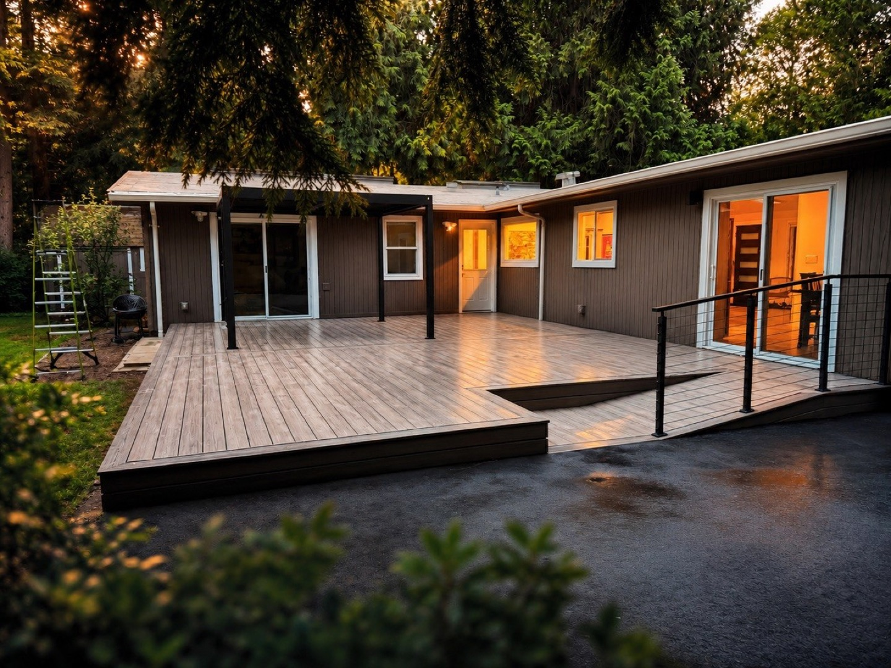

From minor repairs to full remodels, our five-person crew brings skilled, dependable craftsmanship to your door across Everett and within ~40 miles.

Leaks, faucets, toilets, garbage disposals, and fixture swaps handled cleanly.
Outlets, switches, light fixtures, and ceiling fan installs, done safely.
Laminate, luxury vinyl plank, tile, and hardwood, laid clean and level.
Custom decks and repairs designed to handle Northwest weather.
Vanities, tile, tubs, and full bathroom refreshes end to end.
The whole odd-job list, knocked out in a single visit.
We treat every home like our own — showing up on time, communicating clearly, and standing behind the work long after we pack up.
Five skilled tradespeople — not a rotating cast of subs.
Fully covered work you can trust around your home.
We show up when we say we will and respect your space.
Clear free estimates with no surprise line items.
Every estimate lists what is included, what materials we use, and what we do if we find rot or old wiring behind the wall.
Five tradespeople, one foreman. The person who quotes your job is on site while it is built.
Licensed through the WA Department of Labor & Industries, with general liability and workers’ comp. We send the certificates with the quote.
“I had my stairs installed with engineered wood and also wanted custom LED lighting to give them a modern look. Nazar was incredibly helpful throughout the entire process and made sure everything turned out exactly as I envisioned!”
Read it on our Google Business Profile.
We are based in Everett and work within about 40 miles: Mukilteo, Lynnwood, Edmonds, Marysville, Snohomish, Monroe, Mill Creek, Bothell, Lake Stevens, Arlington and the surrounding Snohomish County area, plus parts of north King County. Estimates are free anywhere in that radius.
Yes. We are a registered Washington contractor with general liability insurance and workers’ compensation coverage. We will send the certificates with your written estimate — you should never have to ask twice for those.
Small repairs usually run $75 to $120 per hour with a minimum visit charge. Bathroom remodels typically fall between $8,000 for a cosmetic refresh and $35,000 for a full mid-range rebuild. Decks run roughly $35 to $75 per square foot installed. You get exact numbers after we see the space or your photos.
No. Estimates are free and there is no travel surcharge within our service area. For small repair lists we can often quote from photos and a phone call, which saves you a visit.
We handle minor plumbing and electrical — faucets, toilets, disposals, outlets, switches, light fixtures and ceiling fans. Anything involving the main line, gas, the electrical panel or a permit goes to our licensed partners, and we will tell you clearly which side your job falls on.
Small repair work is usually scheduled within a few days. Larger remodels typically start two to four weeks out, and permit review can add time before that. We give you a real date rather than an optimistic one.
Most homeowners end up juggling three or four contractors for one project: a plumber for the vanity, an electrician for the fan, a tile setter, and someone else for the trim. Meanwhile every one of them blames the other when a measurement is off. We built Nezer Repair & Remodeling to remove that problem. Our crew of five handles framing, finish carpentry, tile, flooring, siding, decks, fencing and the minor plumbing and electrical that goes with them — so one foreman owns the whole scope from the first walkthrough to the final punch list.
We are a service-area business based in Everett, which means no showroom rent and no sales staff — the money goes into labor and materials instead. We work in occupied homes every day and treat them accordingly: drop cloths, shoe covers on request, daily cleanup, and a walkthrough at the end so you can see exactly what was done before we ask for the final payment.
Older homes around Everett, Edmonds and Shoreline are rarely square or plumb, and that is normal. A good carpenter works with what the house gives him rather than pretending it is straight. That is why we scribe trim to the wall, check subfloors for flatness before laying a floor, and look behind siding for rot before quoting a re-side. If we find something unexpected once a wall is open, we stop, show you, and quote the fix before continuing — no surprise line items at the end.
Free, no-pressure estimates across Everett and beyond.